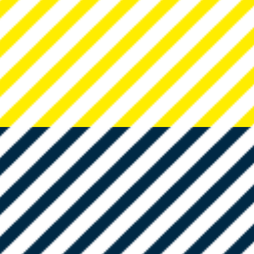
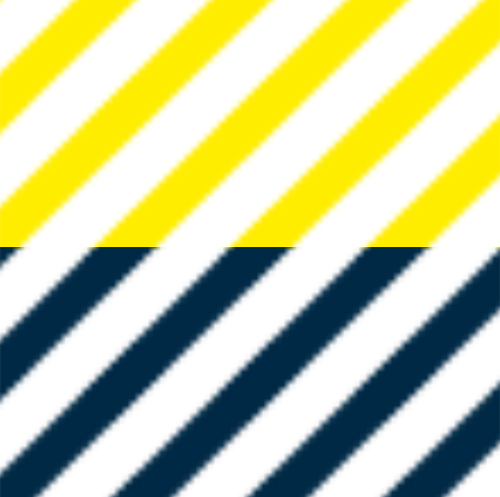
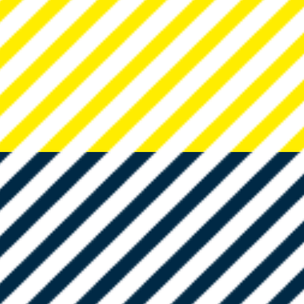
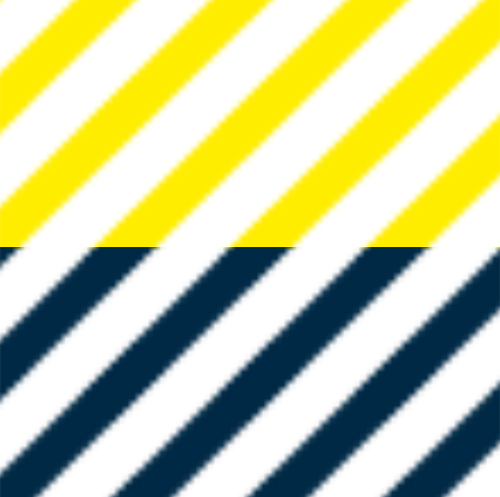

Das Layout Prinzip beschreibt die Kombinationsmöglichkeiten der verschiedenen Gestaltungselemente und deren Verhältnis zueinander.
Kombination von Typografie, Pattern und Fläche.
Kombination von Typografie, Pattern und Icons.
Kombination schwarz-weiß Freisteller und Pattern.
Kombination von Typografie, Pattern und Icons.
Kombination von Pattern, Fläche, Typografie und farbigem Bild.
Kombination von Typografie, Pattern, Fläche und Icons.
Das Social Media Toolkit umfasst unterschiedlich gestaltete Post- und Inhaltstypen für Facebook und Instagram. Basierend darauf können bestehende Elemente entnommen werden oder die Gestaltung passend zum geplanten Post angepasst werden. Das Download Paket umfasst eine Adobe Illustrtator Datei sowie die zugehörigen Verknüpfungen.
 


